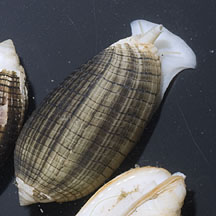
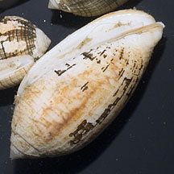
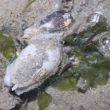
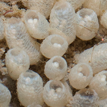
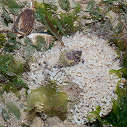
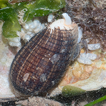

|
|
| shelled snails text index | photo index |
| Phylum Mollusca > Class Gastropoda |
| Waved mitre
snails Pterygia undulosa Family Mitridae updated Oct 2019 Where seen? This bullet-shaped burrowing snail was seen on Changi and Chek Jawa. Initially in some numbers, then dwindling away. Features: 2-5cm. Shell thick with fine ridges in a cross-hatched pattern. The shell has a dark 'skin' which can peel off. There is notch at the tip of the shell for the siphon to emerge. The animal is white with a broad foot and short tentacles. Operculum small and brown. What does it eat? Mitre snails are carnivorous and many feed on worms. They may also scavenge. |
 Changi, Aug 12 |
 Changi, Aug 12 |
 One big one with two smaller ones. Mating? Changi, Aug 12 |
| Baby mitres: The snail was seen in groups of several individuals with small egg capsules laid on hard surfaces nearby. |
 Changi, Sep 15 |
 Egg capsules laid on a Window-pane shell. Changi, Sep 15 |
 Laying egg capsules on a dead bivalve shell. Changi, Sep 15 |
| Waved mitre snails on Singapore shores |
On wildsingapore
flickr
|
| Other sightings on Singapore shores |
| Family
Mitridae recorded for Singapore from Tan Siong Kiat and Henrietta P. M. Woo, 2010 Preliminary Checklist of The Molluscs of Singapore. ^from WORMS.
|
| Acknowledgement Thanks to Neo Mei Lin for sorting out the identification of this snail on her blog, and to Tan Siong Kiat for identifying it. Links
References
|